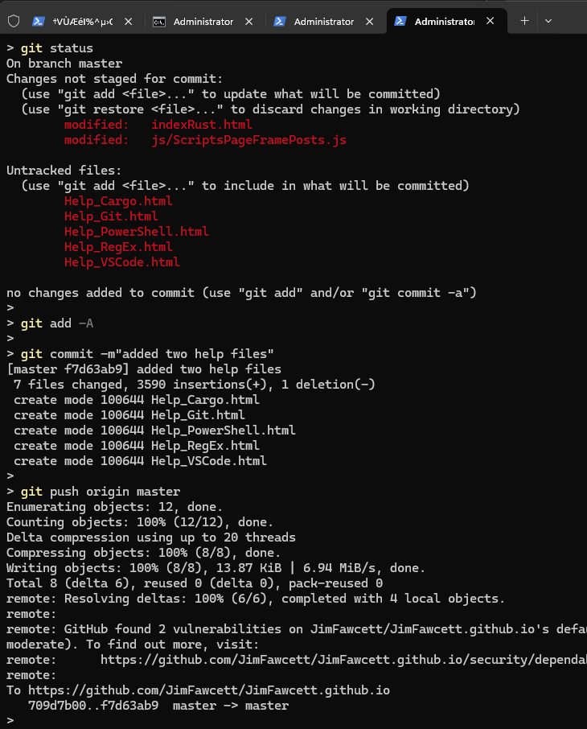

| Topic | Commands |
|---|---|
|
Managing code with git
[ show git work flow ].

|
git is a distributed version control system. It manages versions of code with one or more branches.
Typical commands are:
|
|
Collaborate using github Create (free) account if you don't have one. |
Submit pull request:
|
| Resource | Description | Link |
|---|---|---|
| Official Git Documentation | The primary source for all Git commands and features. | git-scm.com/doc |
| Pro Git Book | A free, comprehensive book for learning Git. | Pro Git Book |
| Git Cheat Sheet | Handy reference for common Git commands. | GitHub Cheat Sheet (PDF) |
| GitHub Docs | Guides and help for using Git with GitHub. | GitHub Docs |
| Atlassian Git Tutorials | Beginner to advanced Git tutorials and workflows. | Atlassian Tutorials |
| Git Reference | Quick reference for Git commands and concepts. | Git Reference |
| Visual Git Guide | Interactive, visual explanation of Git concepts. | Visual Git Guide |
| Oh Shit, Git!? | Fun, practical solutions to common Git mistakes. | ohshitgit.com |
| Git Explorer | Interactive tool to find the right Git command. | gitexplorer.com |
| Stack Overflow Git Questions | Community Q&A for all things Git. | Stack Overflow: Git |